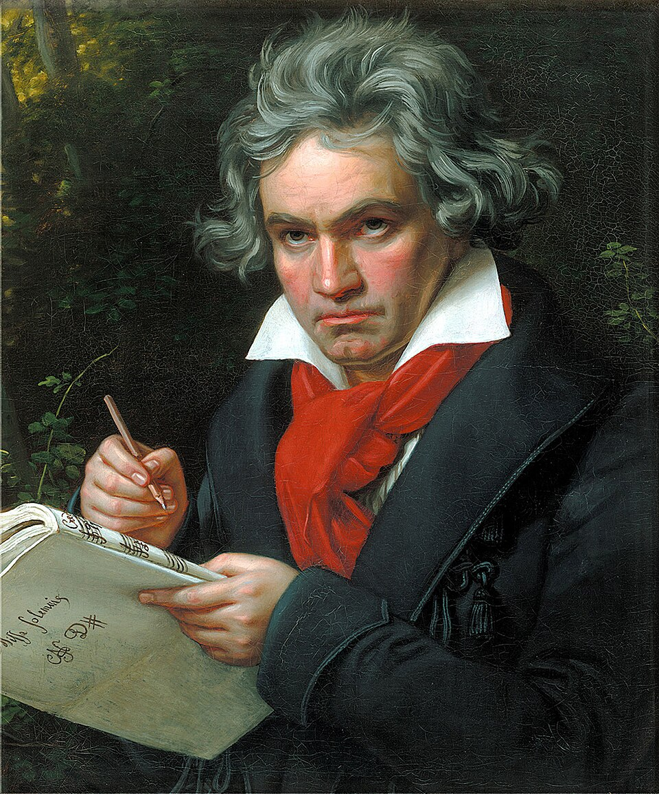

Esempi di Persone con Intelligenze Diverse
-
Intelligenza Linguistica: William Shakespeare – celebre scrittore e poeta inglese.

-
Intelligenza Logico-Matematica: Albert Einstein – fisico teorico noto per la teoria della relatività .

-
Intelligenza Spaziale: Leonardo da Vinci – artista e inventore con eccezionali abilità visive e creative.

-
Intelligenza Corporeo-Cinestetica: Marcell Jacobs – atleta olimpico con controllo corporeo straordinario.

-
Intelligenza Musicale: Ludwig van Beethoven – compositore tedesco tra i più influenti della storia.

-
Intelligenza Emotiva: Oprah Winfrey – conduttrice e filantropa dotata di empatia e comunicazione.

-
Intelligenza Intrapersonale: Sigmund Freud – psicoanalista che ha esplorato la mente e la consapevolezza di sé.

-
Intelligenza Naturalistica: Jane Goodall – scienziata e ambientalista esperta nello studio dei primati.